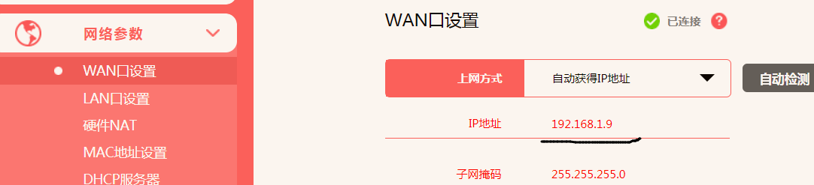
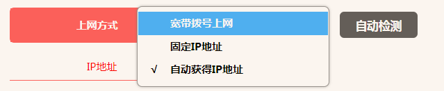

1. IP
2. 公网
1.什么是公网？
- 1.广域网IP是指以公网连接Internet上的非保留地址。广域网、局域网是两种Internet的接入方式，广域网的计算机和Internet上的其他计算机可随意互相访问。（百度百科）
2.什么是内网？
- 1.局域网的覆盖范围一般是方圆几千米之内，其具备的安装便捷、成本节约、扩展方便等特点使其在各类办公室内运用广泛。局域网可以实现文件管理、应用软件共享、打印机共享等功能，在使用过程当中，通过维护局域网网络安全，能够有效地保护资料安全，保证局域网网络能够正常稳定的运行。
- 2.内网就是局域网
3.如何分辨是公网还是内网？
直接百度”ip地址查询”就可以看到本机IP，然后在下面这几个地址段内的都是内网：
10.0.0.0/8： 10.0.0.0～10.255.255.255172.16.0.0/12： 172.16.0.0～172.31.255.255192.168.0.0/16： 192.168.0.0～192.168.255.255
还有个100.64开头的地址段也是内网。
信息来源：http://ask.zol.com.cn/x/5398808.html
3.2 通过网通联通的ADSL猫拨号上网后，在整个互联网上，联通会zhi分配给你一个独占的IP地址dao，这个IP在全世界都是唯一的，我们叫公网IP。
而你家有个路由器，路由器下连接了多台电脑，为了区分他们啊，路由器会给每台电脑会分配一个独立的IP地址，这个只是在你家里内部网络才能使用的，这个就是私网IP
常见的私网IP有 192.168.0.X ,192.168.1.1,172.16.X.X，10.X.X.X 这样的IP地址当初就规定好了，在公网上是看不到的，是不会分配给用户的。
信息来源:https://zhidao.baidu.com/question/1497787602236877219.html
- 难道是因为我用了路由器，所以才是内网？
- 实际我是公网？
3.2.1
3. WAN的IP
3.1 问题：
1.判断ip地址的时候，是查看本机ip吗？路由器里面的WAN端口的IP地址又是什么？

2.WAN口就是路由器的外网接口，相当于外面的进线接口，它有自己的IP，MAC地址，和获取IP的多种方式;来源
3.WAN口可以通过PPPOE拨号，这种方式上网一般都是因为你用的是宽带帐号上网，不过这样的上网方式你的IP地址是随机分配的，如果你要想拥有固定的IP地址，那么需要将接口类型设置成固定IP，这种方式一般为这台电脑需要被外界直接访问时使用。还有一种接口类型为自动获取IP，一般当路由器后面还需要接路由器时，一般使用自动获取IP。
3.1 不过，我自己的路由器，只有自动获取与固定两种模式，可能与品牌有关（水晶路由器）
3.2 也可能，现在都是这样了，时代改变；2020-10-7 16:13:25

4. LAN口的IP
1.既然了解了WAN口的IP，顺便也看看LAN口的含意；LAN口也是有IP地址的；
LAN口就是路由器的内网接口，它的LAN口就是它在内网之间的PC访问时的一个身份。因此，我们在登录路由器的时候都是通过输入路由器的LAN口，如果路由器的LAN修改了，那么我们输入路由器的IP也要改成修改后的IP。修改LAN的IP一般在多个路由器串联时使用，此时的路由器WAN口接口类型为自动获取。
不过一般为了安全考虑，很多都是修改了LAN口IP的，比如政府机构，他们的内网IP你们一般不会知道。
5. MAC地址
1.如果说路由器的WAN口和LAN口IP地址为艺名的话，那么WAN口和LAN口的MAC地址为它的真实姓名。IP地址都是虚拟出来的地址，好使用和识别些。MAC地址就是物理地址的意思。比如，有些固网服务商绑定了帐号，那就是通过帐号绑定它的WAN口MAC地址，只要你换路由器的话就需要松绑，否则是连不上的。如果你开始通过电脑拨号上网的话，然后再安装路由器，此时服务商又绑定了帐号，那么我们可以通过打他们的电话叫他们松绑，也可以通过克隆PCMAC地址就OK了。
6. 链接路由器被分配的ip
1.当电脑、手机连接路由器上网时，路由器会先给电脑/手机分配一个IP地址。而这个IP地址，是在路由器在DHCP地址池中随机进行分配的
2.DHCP（动态主机配置协议）是一个局域网的网络协议。指的是由服务器控制一段IP地址范围，客户机登录服务器时就可以自动获得服务器分配的IP地址和子网掩码。默认情况下，DHCP作为Windows Server的一个服务组件不会被系统自动安装，还需要管理员手动安装并进行必要的配置。
3.DHCP(Dynamic Host Configuration Protocol),动态主机配置协议，是一个应用层协议。当我们将客户主机ip地址设置为动态获取方式时，DHCP服务器就会根据DHCP协议给客户端分配IP，使得客户机能够利用这个IP上网。来自